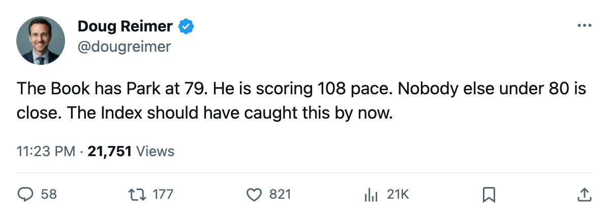
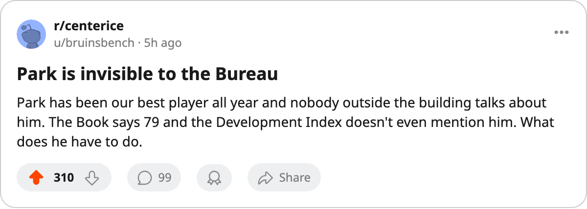

MIN
MIN108 Pace on a 79: The Lowest-Graded Scorer in the Top 12 Plays for a Team Nobody Grades
Richard Park has no entry on the Development Index, a Book grade of 79, and the 12th-best pace in hockey. Minnesota's payroll is the 8th cheapest and their points cost $2.72M a pop.
 Doug ReimerAnalytics editor, ex-video coach · The Slot Report
Doug ReimerAnalytics editor, ex-video coach · The Slot Report
 Richard Park79 is 12th in the league by pace at 108 points per 82. He is rated 79 in the Book. Among the top 12 by pace, the next-lowest overall is 84, five points higher. Nobody else below 80 is anywhere near his rate.
Richard Park79 is 12th in the league by pace at 108 points per 82. He is rated 79 in the Book. Among the top 12 by pace, the next-lowest overall is 84, five points higher. Nobody else below 80 is anywhere near his rate.
The Development Index does not list him. He is at base. The Bureau has him playing exactly as well as his 79 says he should, and the 79 says he is the 12th-best scorer in hockey.
The grade gap in the top 12
| Player | Club | Pace | Overall | Gap to next-lowest |
|---|---|---|---|---|
 Markus Naslund91 Markus Naslund91 | VAN | 141 | 91 | — |
 Todd Bertuzzi93 Todd Bertuzzi93 | VAN | 128 | 93 | — |
 Martin Straka86 Martin Straka86 | PIT | 123 | 87 | — |
 David Legwand89 David Legwand89 | NSH | 121 | 88 | — |
 Glen Murray80 Glen Murray80 | BOS | 121 | 85 | — |
 Saku Koivu86 Saku Koivu86 | MIN | 120 | 84 | 84 |
 Jarome Iginla92 Jarome Iginla92 | CGY | 118 | 94 | — |
 Mario Lemieux88 Mario Lemieux88 | PIT | 118 | 89 | — |
 Joe Thornton91 Joe Thornton91 | BOS | 116 | 90 | — |
 Richard Zednik81 Richard Zednik81 | MTL | 111 | 86 | — |
 Alexei Yashin83 Alexei Yashin83 | NYI | 109 | 84 | 84 |
| Richard Park | MIN | 108 | 79 | 79 |
Park is 5 points below the floor of this group. The players rated 84 (Koivu, Yashin) are two of the three closest to him, and Koivu is his own teammate.
What the Index does not say
The Development Index measures the gap between the Book's base grade and what a man is doing tonight. A +6 means the overall sits six above where the base was set. Park has no entry, risers or fallers. His current overall of 79 is the base. The Bureau is saying: he is performing as a 79. The 108 pace disagrees.
Among all players rated 79 or below in the league's top 30 by points, Park has the best pace by 11 points:
| Player | Overall | Pace | Points | GP |
|---|---|---|---|---|
| Richard Park | 79 | 108 | 25 | 19 |
| Eric Meloche78 | 79 | 97 | 19 | 16 |
 Sergei Berezin78 Sergei Berezin78 | 78 | 96 | 21 | 18 |
| Brandon Reid79 | 79 | 96 | 21 | 18 |
 Sean Hill73 Sean Hill73 | 77 | 92 | 19 | 17 |
 Vyacheslav Kozlov78 Vyacheslav Kozlov78 | 72 | 92 | 19 | 17 |
Kozlov, at 72, is a bigger absolute mismatch. His 92 pace on a 72 grade spans 20 points. But Park's 108 puts him in a different tier: no player rated below 80 in the top 30 scores at triple digits. Park does, by 12 points over the next man in that group.
Minnesota's ledger
The Wolves pay $51.77M, 8th cheapest of 30 clubs. They have 19 points and sit 8th in the Western Conference. Their cost per point is $2.72M, 11th best in hockey.

The money is concentrated below Park. Saku Koivu carries the other production: 19 points in 13 games at a 120 pace, rated 84, and now out with a shoulder.  Manny Fernandez92 is 92 in the Book and takes 68% of the starts. Neither Koivu nor Fernandez is a Development Index entry.
Manny Fernandez92 is 92 in the Book and takes 68% of the starts. Neither Koivu nor Fernandez is a Development Index entry.
The one Wolf on the Index is Pierre-Marc Bouchard81, +9 (74 to 81), 21 years old, 7 points in 19 games. He is a riser on volume the team can absorb. Park is the one producing at a pace the team cannot reproduce without him.
The slotting underneath
The mis-slot list puts  Jochen Hecht76 (76, L3LW) and
Jochen Hecht76 (76, L3LW) and  Vitali Yachmenev75 (75, L3RW) both rated above
Vitali Yachmenev75 (75, L3RW) both rated above  Mikko Eloranta72 (72, L2RW, P2RW). Eloranta plays second-line wing and power-play second unit. Two men rated 3 to 4 points above him sit on the third line. The coach has the two better players buried below the worse one in the lineup structure.
Mikko Eloranta72 (72, L2RW, P2RW). Eloranta plays second-line wing and power-play second unit. Two men rated 3 to 4 points above him sit on the third line. The coach has the two better players buried below the worse one in the lineup structure.
Hecht is also listed as S4 (fourth-line penalty kill). A 76-rated left wing killing penalties on the fourth unit while a 72 plays PP2 is the kind of decision that makes a $2.72M-per-point team leave production on the bench.
What this costs Minnesota
With Koivu's shoulder keeping him out, Park becomes the only player on this roster producing above a 100 pace. Koivu's 120 pace in 13 games and Park's 108 in 19 are the team's two scoring engines. One is hurt. The other is graded 79.

Minnesota sits on the playoff line in the West, 8th place, 19 points, 0 points ahead of the 8th-place cutoff marker. The Development Index lists one riser, no fallers. The Book grades them a 79 for a man doing what Park is doing. Either the Bureau will adjust, or the Wolves will keep producing cheap points through a player nobody is tracking.
The desk's call: the Index will list Park as a riser before December ends.

